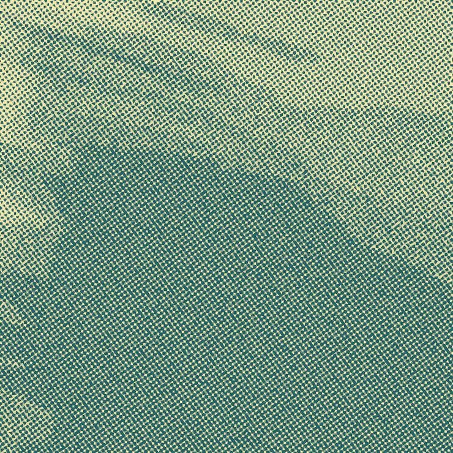
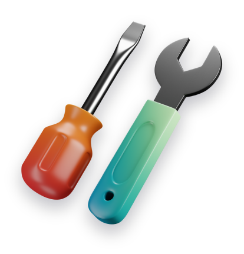
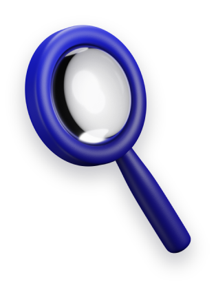

Proposal · RFP-03-0-2026/BM · Website Redesign
From first click to first day.
A mobile-first, accessible website that helps future students find their program, see the career it leads to and apply, with analytics that follow every step to enrollment.

01 · What we heard
A record-breaking college deserves a website that keeps up.
2,422
full-time students in fall 2025, a new record
#1
WalletHub 2026 ranking, as reported by the College
Fastest
growing college in Missouri (2026)
2.1 AA
WCAG level the redesign must meet
What you asked for
Redesign the College website so every page is mobile responsive and meets WCAG 2.1 Level AA, and improve analytics to track visitors, digital communications, engagement, applications and enrollment.
What success looks like
A student on a phone finds a program, sees where it leads and applies in minutes, and the College sees which pages and channels produce applications and enrolled students.
Sources: RFP-03-0-2026/BM (posted 2 Nov 2026, responses due 4 Dec 2026); News Tribune (record enrollment, Oct 2025 and Aug 2026); statetechmo.edu (rankings).

02 · What the RFP really asks
Three requirements, one enrollment journey.
1
Mobile responsive
Most prospects arrive on a phone. Every page, program and form must work there first.
Mobile-first templates2
WCAG 2.1 AA
Every page and document accessible, at launch and as staff keep adding content.
Tested and monitored3
Analytics to enrollment
Follow a visitor from the first click to application and enrollment, by program and channel.
Funnel dashboard4
Our focus
The journey from curiosity to application is where we put the most design and measurement effort.
We will confirm together in discovery: current platform and integrations · application and student-information systems · number of pages and documents to migrate
03 · Our solution
Find, trust, apply, enroll: a website built as a journey.

Program finder
Search by career interest, with clear program pages.
Career proof
Outcomes, employers and student stories on every program page.
Easy apply
Short, accessible path to the application, on any phone.
Measured to enrollment
GA4 events and a dashboard by program and channel.
Mobile-first WCAG 2.1 AA Open-source WordPress, no license fees The College owns everything
04 · Preliminary concept
A program finder and a funnel you can see.
statetechmo.edu · find your program
Find your career. We'll train you for it.
I want to work in… electrical, aviation, health…
Search
Electrical Distribution2-year program · hands-on
Career outcomes →
Aviation Maintenance2-year program · hands-on
Career outcomes →
Physical Therapist Asst.2-year program · hands-on
Career outcomes →
Ready to apply? It takes about 15 minutes.Apply
ENROLLMENT FUNNEL DASHBOARD
Example figures. Each step tracked by program and by channel.
Preliminary concept prepared for this proposal, not an official State Tech design. Programs and funnel figures are illustrative; final work follows the College's brand.
05 · Brand presence
The same craft on every page.
Concept brands created by TWO&HUMAN to show our art direction and standard of execution. Fictional brands, not client projects.

06 · Scope and deliverables
Everything to redesign, migrate and measure.
Discovery
Stakeholder interviews, analytics review, content inventory and top tasks.
Approved planArchitecture
Sitemap, program finder, navigation and content model.
Approved sitemapDesign
Design system, mobile-first templates, clickable prototype.
Milestone 1Build
WordPress build, program finder, forms, search, CMS roles.
Milestone 2Migration and accessibility
Content migration, document remediation plan, WCAG 2.1 AA testing.
Test reportAnalytics
GA4, events, application tracking and an enrollment funnel dashboard.
Milestone 3Assumptions that protect your budget: up to 400 approved pages migrated (confirmed by the inventory) · up to 14 page templates · two revision rounds per design deliverable · anything outside scope quoted in writing before work starts.

07 · Timeline and success measures
Live in 20 weeks, ahead of fall recruiting.
Weeks 1–4
Discover
- Interviews and inventory
- Top tasks and sitemap
- Analytics baseline
Weeks 5–9
Design
- Design system
- Clickable prototype
- Milestone 1
Weeks 10–17
Build and migrate
- WordPress and finder
- Content migration
- Milestone 2
Weeks 18–20
Test and launch
- WCAG 2.1 AA testing
- Funnel dashboard
- Launch and training
Start date follows award. Central Time is 3 hours behind us; weekly status in writing and calls in the College's morning.
Application starts and completions by program Mobile task completion Zero critical accessibility errors at launch Enrollment attributed by channel
08 · Team and the questions you should ask
Founder-led, and ready for hard questions.
Julio Briones
Co-founder · Strategy and project lead
Single point of contact. Leads discovery, content and the program story; coordinates deliverables, revisions and QA for international clients.
Mariam Neme
Co-founder · Software engineer
Leads the WordPress build, accessibility, integrations and the analytics that follow students to enrollment.
Established 2026 · Tucumán, Argentina · remote, in English and Spanish · founder-led: the people in this proposal do the work.
Will we be locked in?
No. Open-source WordPress, no proprietary builder, no license fees. Code, content and accounts belong to the College.
Can our staff keep it accessible?
Yes. Locked templates, an in-editor accessibility checker and a short guide for every editor role.
How do you track enrollment?
GA4 events on every step, connected to the application where the College's systems allow it, in one dashboard.
Contracts, insurance and payments?
Invoices in U.S. dollars, IRS Form W-8BEN-E as a foreign vendor, and certificates of insurance as required.

09 · Investment (USD)
One fixed build price, three ways to care for it.
Launch
$48,500 one time
College-provided hosting
- Design, build and migration
- WCAG 2.1 AA test report
- Enrollment funnel dashboard
- Training and 60-day stabilization
Recommended
Launch + Care
$450 /month
+ $48,500 fixed build
- Everything in Launch
- Managed U.S. hosting
- Updates, backups and security
- Monthly accessibility scan
- Up to 4 hours of changes
Launch + Care + Grow
$1,100 /month
+ $48,500 fixed build
- Everything in Care
- Monthly funnel review
- One conversion test a month
- Up to 10 hours of changes
Accessibility guarantee. Zero critical errors in automated WCAG 2.1 AA scans at launch, and anything flagged in the first 60 days is fixed at no cost.
Build: discovery 3,600 · architecture 3,000 · design 7,200 · build 15,600 · migration and accessibility 12,000 · analytics 4,800 · training and launch 2,300. Payments 30/40/30 on approved milestones · third-party costs at cost · valid 90 days · also entered in the College's pricing form.

10 · Compliance and next steps
Ready to take students from first click to first day.
Website redesign, all pagesYes
Mobile responsiveYes
WCAG 2.1 Level AAYes
Analytics: visitors, engagementYes
Analytics: applications, enrollmentYes
Content migrationYes
Required formsIncluded
InsuranceAs required
1 · Submission
By December 4, 2026.
2 · Interview
A walk-through of the prototype approach.
3 · Kickoff
Discovery starts in week 1.
Julio Briones · julio@twoandhuman.com · +54 381 509 8972 · twoandhuman.com